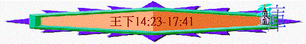

|
屬神國度的衰落 |
|||
|
二王—行神的旨意得堅固
|
二國—不專心順服終分裂
|
二先知—神能力彰顯仍剛硬
|
二結局—繼續行惡至終亡國
|
|
王上1-10 |
王上11-16 |
王上17-王下9:4 |
王下9:5-25:30 |
四.二結局----繼續行惡至終亡國(王下9:5-25:30)
1.亞哈家的結局(王下9:5-10:36)
2.南北國的衰落(王下11-16)
E.北國耶羅波安王朝
a.王的惡行
「猶大王約阿施的兒子亞瑪謝十五年，以色列王約阿施的兒子耶羅波安在撒瑪利亞登基，作王四十一年。他行耶和華眼中看為惡的事，不離開尼八的兒子耶羅波安使以色列人陷在罪裡的一切罪。」14:23-24
～此耶羅波安也稱為耶羅波安二世，他四十一年的執政也包括與父親約阿施共同作王十二年
b.神的恩典
(1)王收復失地
「他收回以色列邊界之地，從哈馬口直到亞拉巴海，正如耶和華以色列的神藉他僕人迦特希弗人亞米太的兒子先知約拿所說的。」14:25
「耶羅波安其餘的事，凡他所行的和他的勇力，他怎樣爭戰，怎樣收回大馬色和先前屬猶大的哈馬歸以色列，都寫在以色列諸王記上。」14:28
「耶和華的話臨到亞米太的兒子約拿，說：」拿1:1
～哈馬口----以色列的北面地土，亞拉巴河即死海----以色列南面邊界
～王收復了所羅門在位的版圖
(2)因神的恩典
(A)先知的預言
～原來先知約拿一早預言以色列會收回失去地土
(B)真神的拯救
「因為耶和華看見以色列人甚是艱苦，無論困住的、自由的都沒有了，也無人幫助以色列人。耶和華並沒有說要將以色列的名從天下塗抹，乃藉約阿施的兒子耶羅波安拯救他們。」14:26-27
～王與百姓雖行惡事，但神仍有恩典，藉耶羅波安拯救
他們
F.南國亞撒利雅王朝
「以色列王耶羅波安二十七年，猶大王亞瑪謝的兒子亞撒利雅登基，他登基的時候年十六歲，在耶路撒冷作王五十二年。他母親名叫耶可利雅，是耶路撒冷人。」15:1-2
「烏西雅行耶和華眼中看為正的事，效法他父亞瑪謝一切所行的；通曉 神默示，撒迦利亞在世的時候，烏西雅定意尋求 神；他尋求耶和華， 神就使他亨通。」代下26:4-5
～亞撒利雅即烏西雅王
a.他的正事----定意尋求神
「亞撒利雅行耶和華眼中看為正的事，效法他父親亞瑪謝一切所行的；」王下15:3
「只是邱壇還沒有廢去，百姓仍在那裡獻祭燒香。耶和華降災與王，使他長大痲瘋，直到死日，他就住在別的宮裡。他的兒子約坦管理家事，治理國民。」代下15:4-5
b.他的惡事
「他既強盛，就心高氣傲，以致行事邪僻，干犯耶和華他的神，進耶和華的殿，要在香壇上燒香。」代下26:16
「他們就阻擋烏西雅王，對他說：「烏西雅啊，給耶和華燒香不是你的事，乃是亞倫子孫承接聖職祭司的事。你出聖殿吧！因為你犯了罪。你行這事，耶和華 神必不使你得榮耀。」烏西雅就發怒，手拿香爐要燒香。他向祭司發怒的時候，在耶和華殿中香壇旁眾祭司面前，額上忽然發出大痲瘋。」代下26:18-19
～王後來卻心高氣傲，違法律法，作了祭司燒香的事，即使祭司阻擋他燒香，他仍隨已意，不受教的強行拿香爐
c.神的管教
「耶和華降災與王，使他長大痲瘋，直到死日，他就住在別的宮裡。他的兒子約坦管理家事，治理國民。」王下15:5
「大祭司亞撒利雅和眾祭司觀看，見他額上發出大痲瘋，就催他出殿；他自己也急速出去，因為耶和華降災與他。烏西雅王長大痲瘋直到死日，因此住在別的宮裡，與耶和華的殿隔絕。他兒子約坦管理家事，治理國民。」代下26:20-21
G.北國撒迦利雅王朝
「猶大王亞撒利雅三十八年，耶羅波安的兒子撒迦利雅在撒瑪利亞
作以色列王六個月。」王下15:8
a.他的惡事
「他行耶和華眼中看為惡的事，效法他列祖所行的，不離開尼八的兒子耶羅波安使以色列人陷在罪裡的那罪。」王下15:9
b.他的惡果
「雅比的兒子沙龍背叛他，在百姓面前擊殺他，篡了他的位。」15:10
c.預言應驗
「這是從前耶和華應許耶戶說：「你的子孫必坐以色列的國位直到四代。」這話果然應驗了。」15:12
H.北國沙龍王朝
「猶大王烏西雅（就是亞撒利雅）三十九年，雅比的兒子沙龍登基
在撒瑪利亞作王一個月。」15:13
a.他的惡行
「雅比的兒子沙龍背叛他，在百姓面前擊殺他，篡了他的位。」15:10
b.他的惡果
「迦底的兒子米拿現從得撒上撒瑪利亞，殺了雅比的兒子沙龍，篡了他的位。沙龍其餘的事和他背叛的情形都寫在以色列諸王記上。」15:14-15
I.北國米拿現王朝
「猶大王亞撒利雅三十九年，迦底的兒子米拿現登基，在撒瑪利亞作以色列王十年。」15:17
a.他的惡行
(1)殘害百姓
「那時米拿現從得撒起攻打提斐薩和其四境，擊殺城中一切的人，剖開其中所有的孕婦，都因他們沒有給他開城。」15:16
(2)敬拜偶像
「他行耶和華眼中看為惡的事，終身不離開尼八的兒子耶羅波安使以色列人陷在罪裡的那罪。」15:18
b.敵國欺壓
「亞述王普勒來攻擊以色列國，米拿現給他一千他連得銀子，請普勒幫助他堅定國位。米拿現向以色列一切大富戶索要銀子，使他們各出五十舍客勒，就給了亞述王。於是亞述王回去，不在國中停留。」15:19-20
～一干他連得約三萬四千公斤(三百萬舍客勒)，以色列人怕亞述攻擊，用金錢財物作為得和平的條件
J.北國比加轄王朝
「猶大王亞撒利雅五十年，米拿現的兒子比加轄在撒瑪利亞登基作
以色列王二年。」15:23
a.他的惡行
「他行耶和華眼中看為惡的事，不離開尼八的兒子耶羅波安使以色列人陷在罪裡的那罪。」15:24
b.他的惡果
「比加轄的將軍、利瑪利的兒子比加背叛他，在撒瑪利亞王宮裡的衛所殺了他。亞珥歌伯和亞利耶並基列的五十人幫助比加；比加擊殺他，篡了他的位。」15:25
K.北國比加王朝
「猶大王亞撒利雅五十二年，利瑪利的兒子比加在撒瑪利亞登基作
以色列王二十年。」15:27
a.他的惡行
「他行耶和華眼中看為惡的事，不離開尼八的兒子耶羅波安使以色列人陷在罪裡的那罪。」15:28
b.國的衰落
「以色列王比加年間，亞述王提革拉毗列色來奪了以雲、亞伯伯瑪迦、亞挪、基低斯、夏瑣、基列、加利利，和拿弗他利全地，將這些地方的居民都擄到亞述去了。」15:29
(1)被奪地土
(2)百姓被擄
c.他的惡果
「烏西雅的兒子約坦二十年，以拉的兒子何細亞背叛利瑪利的兒子比加，擊殺他，篡了他的位。」15:30
L.南國約坦王朝
「以色列王利瑪利的兒子比加第二年，猶大王烏西雅的兒子約坦登基。他登基的時候年二十五歲，在耶路撒冷作王十六年。他母親名叫耶路沙，是撒督的女兒。」15:32-33
a.他的善行
(1)智慧的跟隨
「約坦行耶和華眼中看為正的事，效法他父親烏西雅一切所行的；」15:34
(2)恆久的持守
「約坦行耶和華眼中看為正的事，效法他父烏西雅一切所行的，只是不入耶和華的殿。百姓還行邪僻的事。」代下27:2
(3)熱心的建立
「只是邱壇還沒有廢去，百姓仍在那裡獻祭燒香。約坦建立
耶和華殿的上門。」王下15:35
～上門可能是指聖殿北面進口的門
b.仍有不足
「只是邱壇還沒有廢去，百姓仍在那裡獻祭燒香。約坦建立耶和華殿的上門。」15:35
c.敵人攻擊
「在那些日子，耶和華才使亞蘭王利汛和利瑪利的兒子比加去攻擊猶大。」15:37
M.南國亞哈斯王朝
「利瑪利的兒子比加十七年，猶大王約坦的兒子亞哈斯登基。」16:1
a.他的惡行
(1)行可憎事
(A)使兒女經火
「卻效法以色列諸王所行的，又照著耶和華從以色列人面前趕出的外邦人所行可憎的事，使他的兒子經火，」16:3
～可能與拜巴力或還願給假神有關，也可能在異教方式敬拜神，但神為可憎
(B)在別處祭祠
「並在邱壇上、山岡上、各青翠樹下獻祭燒香。」16:4
「又在猶大各城建立邱壇，與別神燒香，惹動耶和華他列祖神的怒氣。」代下28:25
～他們在邱壇及別處祭祠假神
(2)不尋求神
(A)受到攻擊
「亞蘭王利汛和以色列王利瑪利的兒子比加上來攻打耶路撒冷，圍困亞哈斯，卻不能勝他。當時亞蘭王利汛收回以拉他歸與亞蘭，將猶大人從以拉他趕出去。亞蘭人（有譯以東人的）就來到以拉他，住在那裡，直到今日。」16:5-6
「亞瑪謝與他列祖同睡之後，亞撒利雅收回以拉他仍歸猶大，又重新修理。」14:22
～以拉他原本是亞哈斯的祖父亞撒利雅從以東戶中得回的地方，但現在亞蘭軍把猶太人趕出，佔領這地
(B)尋求外邦
「亞哈斯將耶和華殿裡和王宮府庫裡所有的金銀都送給亞述王為禮物。」16:8
「那時，亞哈斯王差遣人去見亞述諸王，求他們幫助；」代下28:16
～他們寧願尋求亞述，卻不尋求真神
(3)更改祭壇
「亞哈斯王上大馬色去迎接亞述王提革拉毗列色，在大馬色看見一座壇，就照壇的規模樣式作法畫了圖樣，送到祭司烏利亞那裡。」16:10
「又將耶和華面前的銅壇從耶和華殿和新壇的中間搬到新壇的北邊。亞哈斯王吩咐祭司烏利亞說：「早晨的燔祭、晚上的素祭，王的燔祭、素祭，國內眾民的燔祭、素祭、奠祭都要燒在大壇上。燔祭牲和平安祭牲的血也要灑在這壇上，只是銅壇我要用以求問耶和華。」16:14-15
～王看見外邦的祭壇模式後，吩咐人照此樣式製造另一壇，也擅自將原本的銅壇搬至北邊，用新的壇獻祭
(4)更改聖物
「又因亞述王的緣故，將耶和華殿為安息日所蓋的廊子和王從外入殿的廊子挪移，圍繞耶和華的殿。亞哈斯其餘所行的事都寫在猶大列王記上。」16:18-19
～他可能因為受亞述的影响，將聖殿的廊子挪移
(5)封鎖殿門
「亞哈斯將神殿裡的器皿都聚了來，毀壞了，且封鎖耶和華殿的門；在耶路撒冷各處的拐角建築祭壇，」代下28:24
(6)尋求別神
「這亞哈斯王在急難的時候，越發得罪耶和華。他祭祀攻擊他的大馬色之神，說：「因為亞蘭王的神幫助他們，我也獻祭與他，他好幫助我。」但那些神使他和以色列眾人敗亡了。」代下28:22-23
～他更改聖物，另做祭壇，破壞聖殿，其中一個原因是他相信亞蘭的神能幫助他，所以他用別壇及別的方式獻祭給假神
b.他的惡果
(1)受外邦欺壓
「因為以色列王亞哈斯在猶大放肆，大大干犯耶和華，所以耶和華使猶大卑微。亞述王提革拉毗尼色上來，卻沒有幫助他，反倒欺凌他。」代下28:19-20
(2)惹真神發怒
「又在猶大各城建立邱壇，與別神燒香，惹動耶和華他列祖神的怒氣。」代下28:25
3.北國至終滅亡(王下17)
A.最後王朝----何細亞
「猶大王亞哈斯十二年，以拉的兒子何細亞在撒瑪利亞登基作以色列王九年。他行耶和華眼中看為惡的事，只是不像在他以前的以色列諸王。」17:1-2
～他是行惡的王，但不像以色列諸王那樣頑劣
B.敗亡經過
a.王被囚禁
「亞述王撒縵以色上來攻擊何細亞，何細亞就服事他，給他進貢。何細亞背叛，差人去見埃及王梭，不照往年所行的與亞述王進貢。亞述王知道了，就把他鎖禁，囚在監裡。」17:3-4
b.城被攻陷
「亞述王上來攻擊以色列遍地，上到撒瑪利亞，圍困三年。何細亞第九年亞述王攻取了撒瑪利亞，將以色列人擄到亞述，把他們安置在哈臘與歌散的哈博河邊，並瑪代人的城邑。」17:5-6
c.人被擄去
C.敗亡原因----得罪神
「這是因以色列人得罪那領他們出埃及地、脫離埃及王法老手的耶和華他們的神，去敬畏別神，」17:7
a.敬拜別神
(1)敬畏別神
「這是因以色列人得罪那領他們出埃及地、脫離埃及王法老手的耶和華他們的神，去敬畏別神，」17:7
(2)隨從惡俗
「隨從耶和華在他們面前所趕出外邦人的風俗和以色列諸王所立的條規。」17:8
(3)建立邱壇
「以色列人暗中行不正的事，違背耶和華他們的神，在他們所有的城邑，從瞭望樓直到堅固城，建築邱壇；」17:9
(4)事奉偶像
「在各高岡上、各青翠樹下立柱像和木偶；在邱壇上燒香，效法耶和華在他們面前趕出的外邦人所行的，又行惡事惹動耶和華的怒氣；且事奉偶像，就是耶和華警戒他們不可行的。」17:10-12
b.不聽主言
(1)不理警戒
「且事奉偶像，就是耶和華警戒他們不可行的。」17:12
(2)不聽勸戒
「但耶和華藉眾先知、先見勸戒以色列人和猶大人說：「當離開你們的惡行，謹守我的誡命律例，遵行我吩咐你們列祖，並藉我僕人眾先知所傳給你們的律法。」他們卻不聽從，竟硬著頸項，效法他們列祖，不信服耶和華他們的神，」17:13-14
(3)厭棄律例
「厭棄他的律例和他與他們列祖所立的約，並勸戒他們的話，隨從虛無的神，自己成為虛妄，效法周圍的外邦人，就是耶和華囑咐他們不可效法的；」17:15
(4)離棄誡命
(A)北國離棄神誡命
「離棄耶和華他們神的一切誡命，為自己鑄了兩個牛犢的像，立了亞舍拉，敬拜天上的萬象，事奉巴力，又使他們的兒女經火，用占卜，行法術賣了自己，行耶和華眼中看為惡的事，惹動他的怒氣。」17:16-17
(B)南國不守神誡命
「猶大人也不遵守耶和華他們神的誡命，隨從以色列人所立的條規。」17:19
c.總不離罪
「將以色列國從大衛家奪回；他們就立尼八的兒子耶羅波安作王。耶羅波安引誘以色列人不隨從耶和華，陷在大罪裡。」17:21-22
D.神審判
a.趕出選民
「所以耶和華向以色列人大大發怒，從自己面前趕出他們，只剩下猶大一個支派。」17:18
b.奪回國權
「將以色列國從大衛家奪回；他們就立尼八的兒子耶羅波安作王。耶羅波安引誘以色列人不隨從耶和華，陷在大罪裡。」17:21
c.被擄異邦
「以致耶和華從自己面前趕出他們，正如藉他僕人眾先知所說的。這樣，以色列人從本地被擄到亞述，直到今日。」17:23
E.外族混雜
「亞述王從巴比倫、古他、亞瓦、哈馬，和西法瓦音遷移人來，安置在撒瑪利亞的城邑，代替以色列人；他們就得了撒瑪利亞，住在其中。」17:24
～這些民來自巴比倫、哈馬、西法瓦音
a.不敬耶和華----遭獅子咬死
「他們才住那裡的時候，不敬畏耶和華，所以耶和華叫獅子進入他們中間，咬死了些人。有人告訴亞述王說：「你所遷移安置在撒瑪利亞各城的那些民，不知道那地之神的規矩，所以那神叫獅子進入他們中間，咬死他們。」」17:25-26
b.又怕耶和華----又事奉己的神
(1)怕神的表現----學習如何敬畏耶和華
「亞述王就吩咐說：「叫所擄來的祭司回去一個，使他住在那裡，將那地之神的規矩指教那些民。」於是有一個從撒瑪利亞擄去的祭司回來，住在伯特利，指教他們怎樣敬畏耶和華。」17:27-28
「他們懼怕耶和華，也從他們中間立邱壇的祭司，為他們在有邱壇的殿中獻祭。」17:32
(2)事假神表現----隨從自己風俗敬假神
「然而，各族之人在所住的城裡各為自己製造神像，安置在撒瑪利亞人所造有邱壇的殿中。」17:29
「他們又懼怕耶和華，又事奉自己的神，從何邦遷移，就隨何邦的風俗。」17:33
F.餘民背約
「他們直到如今仍照先前的風俗去行，不專心敬畏耶和華，不全守自己的規矩、典章，也不遵守耶和華吩咐雅各後裔的律法、誡命。（雅各，就是從前耶和華起名叫以色列的。）耶和華曾與他們立約，囑咐他們說：「不可敬畏別神，不可跪拜事奉他，也不可向他獻祭。」17:34-35
「我耶和華與你們所立的約你們不可忘記，也不可敬畏別神。」17:38
「他們卻不聽從，仍照先前的風俗去行。」17:40
～「他們」可能只留下以色列地的選民，他們沒因為亡國而悔改，反而悔改，反而繼續不守神當初與他們立的約